A mapping from R-function ampute to pyampute¶
Amputation of complete datasets is important for evaluating the effect of missing values on the outcome of a model. A methodology for multivariate amputation has been proposed by [Schouten2018] and has been implemented in R-function ampute in package mice. Since then, it is used by many (see [Schouten2021] for an example).
With pyampute, we now provide the same amputation methodology for Python users, and we do more. Compared to ampute, the input parameters of pyampute are more intuitive and easier to specify.
In this blogpost, we serve two purposes:
For R users who want to switch to
pyampute, we provide a mapping from the input parameters ofamputeto those ofpyampute.For Python users, we give a more in-depth explanation of how
pyamputecan be used to generate any desired form of missing data.
In general, multivariate amputation follows this scheme. Specifically for ampute, a detailed explanation of the input parameters is provided in a vignette. Note that for pyampute, a short explanation of the input parameters is provided in the documentation: MultivariateAmputation.
The fundament: patterns¶
Key in multivariate amputation is the specification of missing data patterns. A missing data pattern is a combination of missing values on certain variables and observed values on the other variables. It can be very helpful to know what missing data patterns occur in your dataset, since these may bring to light underlying issues in data collection or preprocessing.
In pyampute, an overview of missing data patterns in an incomplete dataset can be obtained with mdPatterns. For instance, the nhanes2 dataset contains 4 missing data patterns:
from pyampute.exploration.md_patterns import mdPatterns
mdp = mdPatterns()
mypatterns = mdp.get_patterns(nhanes2)
{kind=link}
Here, blue and red correspond to observed and missing values respectively. The numbers on the left specify the number of rows in the dataset that follow a particular missing data pattern. For instance, there are 3 rows with observed values on variables age, hyp and bmi and a missing value on variable chl.
Combinations other than the ones you see in the plot do not exist in the dataset. For instance, there are no rows with observed values on age and hyp and missing values on bmi and chl.
The multivariate amputation methodology depends on the specification of these missing data patterns. Per pattern, you decide the missing data mechanism, the frequency, the weights of the variables that determine where the missing values should occur and the missingness type. Considering all of this, the input parameters of ampute and pyampute roughly differ as follows.
Main difference in input between ampute and pyampute
In ampute, the patterns, mechanisms, weights, frequencies and types are specified as distinct parameters. That means that all these parameters should have matching sizes. For instance, the first row in the patterns matrix should correspond to the first row in the weights matrix, and to the first value in the frequency vector, etcetera.
In pyampute, we specify one dictionary per pattern. In that dictionary, information about the mechanism, weights, frequency and type can be specified. The idea is that it is easy to add and remove patterns, and you have the freedom to choose default settings for some patterns while specifying others.
Let’s discuss in more detail.
The patterns matrix in ampute¶
In ampute, patterns are specified with a binary matrix of size  by 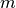 where indicates the number of patterns and indicates the number of variables. A cell in the patterns matrix equals
by 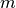 where indicates the number of patterns and indicates the number of variables. A cell in the patterns matrix equals 0 if a variable should be amputed and 1 otherwise.
The patterns matrix of nhanes2 would look as follows:
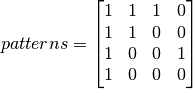
Without further specification, by default ampute generates a number of patterns that is equal to the number of variables in the dataset. Then, in every pattern, just one variable is amputed. For instance, if we would ampute a complete version of nhanes2, the default patterns matrix in ampute would be:
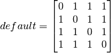
Specifying patterns in pyampute¶
As noted before, in pyampute we make all our choices per pattern. In case of multiple patterns, the input is a list of dictionaries. For nhanes2, that would mean:
from pyampute.ampute import MultivariateAmputation
ma = MultivariateAmputation(
patterns = [
{'incomplete_vars': [3]},
{'incomplete_vars': [2]},
{'incomplete_vars': [1,2]},
{'incomplete_vars': [1,2,3]}
]
)
nhanes2_incomplete = ma.fit_transform(nhanes2_complete)
This may seem cumbersome at first, but it will allow for easy modification of just one of the patterns while keeping the others intact. We will further discuss this when talking about mechanisms, weights, frequency and types.
In pyampute, we have furthermore improved the default patterns setting. Here, we generate one (instead of ) missing data pattern, and in that pattern we randomly ampute 50% of the variables (instead of 1 per pattern). We expect that the new default will be a better fit with the amputation purposes of most users.
Proportion and frequency¶
Naturally, specifying the proportion of missing values is an important part of any amputation process. In multivariate amputation (see [Schouten2018]), we control that proportion with two input arguments:
propdetermines the proportion of incomplete data rowsfreqdetermines how those incomplete rows are divided over the patterns.
Proportion and frequency in ampute¶
In ampute, prop is one value (a float, or integer) and freq is a vector of length . Then, prop = 0.3 indicates that 30% of the rows should be amputed. And freq = c(0.1, 0.1, 0.2, 0.6) would indicate that 10% of those incomplete rows should have pattern 1, 10% should have pattern 2, 20% should have pattern 3 and 60% should have pattern 4. In other words, for a dataset with 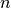 rows, 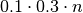 rows will be amputed with pattern 1.
Proportion and frequency in pyampute¶
In pyampute, the definitions of proportion and frequency are very similar to those in ampute. The only difference is that prop is a global input parameter, whereas freq is specified per pattern. Therefore, freq has to be specified within the dictionaries. That could look as follows:
ma = ampute.MultivariateAmputation(
patterns = [
{'incomplete_vars': [3], 'freq': 0.1},
{'incomplete_vars': [2], 'freq': 0.1},
{'incomplete_vars': [1,2], 'freq': 0.2},
{'incomplete_vars': [1,2,3], 'freq': 0.6}
],
prop = 0.3
)
It is important to realize that all incomplete rows should be amputed with at least one of the patterns, and therefore the frequency values should sum to 1. By default, all patterns are created with equal frequency.
Missing data mechanisms¶
In missing data theory, we categorize missing data problems into three categories (cf. [Rubin1976]). Roughly:
Data is Missing Completely At Random (MCAR) if the probability of being incomplete is the same for every row in the dataset.
Data is Missing At Random (MAR) if the probability of being incomplete depends on observed values (i.e. if the information about the missing values is in the observed data).
Data is Missing Not At Random (MNAR) if the probability of being incomplete is unobserved. This could mean that the missingness probability depends on the missing value itself, or it could mean that the probability depends on a source outside the data.
The outcome of your model and the extent to which certain missing data methods may or may not be useful greatly relies on whether you assume data to be MCAR, MAR or MNAR. For instance, in case of MAR, observed data can be used to infer about the missing values (for example using imputation methods or maximum likelihood estimation), but with MNAR that may be more difficult. In [Schouten2021], we provide a thorough discussion of this topic.
Mechanisms in ampute¶
In ampute, missing data mechanisms are defined by means of one string or a vector of strings. In case of a vector, the number of strings should equal the number of patterns (such as the number of rows in the patterns matrix, and the number of frequency values). For instance, mech = "MAR" or mech = c("MAR", "MCAR", "MAR", "MNAR") (for four patterns).
Mechanisms in pyampute¶
In pyampute, we specify the mechanism with a string per pattern. Here, it is not necessary to define a mechanism for every pattern. If left open, the MAR default will be used.
ma = ampute.MultivariateAmputation(
patterns = [
{'incomplete_vars': [3], 'mechanism': "MCAR"},
{'incomplete_vars': [2]},
{'incomplete_vars': [1,2], 'mechanism': "MNAR"},
{'incomplete_vars': [1,2,3]}
]
)
The missing data mechanisms are strongly related to the concept of weighted sum scores, which we will discuss in the next section. The choices for a MCAR, MAR or MNAR mechanism will therefore be translated into a default set of weights. One may also want to determine a custom set of weights, which could create another form of MAR or MNAR missingness. In that case, the mechanism does not have to explicitly be specified.
In pyampute, there is the possibility to let the mechanism be a mixture of MAR and MNAR missingness. For such a pattern, weights have to be provided. Let’s discuss these weights in more detail.
Weighted sum scores: weights¶
In multivariate amputation, we not only control which variables will be incomplete (by means of missingness patterns), but we also control where the information about these missing values is. As said before, such control is important since it influences the extent to which certain missing data methods may or may not work.
Whether or not a data row is amputed is determined by the combination of a weighted sum score and a probability distribution. For row  in 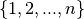, a weighted sum score is calculated as follows:
in 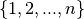, a weighted sum score is calculated as follows:
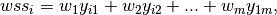
where 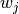 is the weight for variable 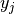 with  in 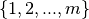. The idea is that by specifying some nonzero weights and letting others be 0, we have control over what part of the dataset contains the information about the missing values.
in 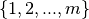. The idea is that by specifying some nonzero weights and letting others be 0, we have control over what part of the dataset contains the information about the missing values.
For instance, let’s say that we specify the following pattern with the following weights for variables age, hyp, bmi and chl;
![pattern = [0, 1, 1, 1]](_images/math/21d520aa20088fe9a87281a4057c84afe405f230.png)
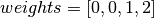
This means that we ampute variable age using the information in variables bmi and chl. Because the weight of chl is twice as large as the weight of bmi, chl’s impact on the amputation is twice as large as well. Therefore, chl has a more important role in a imputation method (or other missing data method) than bmi. In contrast, hyp is not weighted nor amputed, and therefore plays a minimal role (although a strong correlation with bmi or chl may still be beneficial, see [Schouten2021]).
By default, a MAR mechanism translates into weights of 0 for the incomplete variables and weights of 1 for the complete variables. For MNAR, weights of 0 are given to the complete variables and 1 to the incomplete variables. In other words, by default, all variables in a weighted sum score are equally weighted.
With a MCAR mechanism, weights are not important and data rows will receive a weighted sum score of 0.
Weights in ampute¶
In ampute, weights are specified in a matrix that has the same size as the patterns matrix: by . In other words, the weights for the first pattern are specified in the first row of the weights matrix, the weights for the second pattern in the second row, etcetera.
Weights in pyampute¶
In pyampute, weights are defined per pattern. That gives the flexibility to manually define weights for some patterns, but use the default settings for other patterns. Weights can be specified using an array or a dictionary.
For instance, we could do the following:
import numpy as np
mean = [5,5,5,5]
cor = 0.5
cov = [[1,cor,cor,cor],[cor,1,cor,cor,],[cor,cor,1,cor],[cor,cor,cor,1]]
n = 1000
compl_dataset = np.random.multivariate_normal(mean, cov, n)
ma = MultivariateAmputation(
patterns = [
{'incomplete_vars': [3], 'weights': [0,4,1,0]},
{'incomplete_vars': [2]},
{'incomplete_vars': [1,2], 'mechanism': "MNAR"},
{'incomplete_vars': [1,2,3], 'weights': {0:-2,3:1}, 'mechanism': "MAR+MNAR"}
]
)
incompl_dataset = ma.fit_transform(compl_dataset)
Here, for the first pattern, we specify weights using an array. Nonzero weights are given to the variables hyp and bmi. Since both these variables are not amputed (only the variable at position 3 is amputed), these weights will result in a MAR mechanism.
For the second pattern, we do not specify weights nor a mechanism. Consequently, the default MAR mechanism is chosen with default settings for weights. Considering that the variable at position 2 is amputed, this means that variables age, hyp and chl are weighted: [1,1,0,1].
For the third pattern, we choose a MNAR mechanism and do not specify weights. Considering that variables hyp and chl are amputed, by default, MNAR results in the following weights: [0,1,1,0].
For the fourth pattern, we specify weights using a dictionary. Here, variables age and chl are weighted (as indicated by the dictionary keys). Since variable age is not amputed, and variable chl is amputed, these weights correspond to a mixture of MAR and MNAR. This should be specified with the mechanism parameter.
Note that negative weights can be given as well. Note furthermore that in order for the weights to make sense:
the existence and extent of correlation between variables is extremely important, see [Schouten2021],
the influence of variables should be equal for equal weights. Therefore, by default, parameter
std = Trueensures that the data is standardized before calculating weighted sum scores.
You can inspect the final weights and their effect on the weighted sum scores as follows. The weights can be obtained with ma.weights, which will result in:
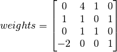
Weighted sum scores are stored in ma.wss_per_pattern, which gives a list of arrays. Attribute ma.assigned_group_number indicates the assignment of rows to patterns. Then, plotting weighted sum scores against the dataset values will help to further understand the effect of the parameter settings.
from scipy import stats
std_data = stats.zscore(compl_dataset)
is_incomplete = np.where(np.isnan(incompl_dataset), 'incompl', 'compl')
# variable `hyp` against the weighted sum scores in pattern 1
df0 = pd.DataFrame(dict(x=std_data[ma.assigned_group_number == 0,1],
y=ma.wss_per_pattern[0],
label=is_incomplete[ma.assigned_group_number == 0,3]))
# variable `age` against the scores in pattern 4
df3 = pd.DataFrame(dict(x=std_data[ma.assigned_group_number == 3,0],
y=ma.wss_per_pattern[3],
label=is_incomplete[ma.assigned_group_number == 3,1]))
fig, ax = plt.subplots(nrows=1, ncols=2, figsize=(8,4))
for name, group in df0.groupby('label'):
ax[0].plot(group.x, group.y, marker='o', linestyle='', ms=5, label=name)
for name, group in df3.groupby('label'):
ax[1].plot(group.x, group.y, marker='o', linestyle='', ms=5, label=name)
plt.show()
{kind=link}
Missingness types and score_to_probability_func¶
At this point in the amputation process, all rows in the dataset are assigned to a pattern and have a weighted sum score. We now reach the state where we decide which rows will be amputed. We do that by means of a probability function that maps the weighted sum scores to a probability of being amputed. The multivariate amputation methodology knows four types of probability functions.

Types in ampute¶
In R-function ampute, for each pattern one of these four types of probability functions can be chosen. You specify your choice using a string or a vector of strings of length :math`k`, similar like mech. For instance, type = "RIGHT" will assign high probabilities to rows with high weighted sum scores in every pattern. And type = c("LEFT", "RIGHT", "MID", "TAIL") will assign high probabilities to low, high, average or extreme weighted sum scores in patterns 1 to 4 respectively.
Score_to_probability_func in pyampute¶
In pyampute, we renamed the parameter to score_to_probability_func to clarify the meaning of the input. Again, a probability function can be chosen per pattern and is indicated in the dictionary.
In addition, pyampute allows for the specification of a custom probability function. This can be any function that maps values in the range 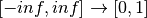. We demonstrate the possibilities of these custom probability functions in the example Amputing with a custom probability function.
Conclusion¶
In sum, with MultivariateAmputation in Python package pyampute we allow for easy, multivariate amputation of complete datasets.
In the example Evaluating missing values with a simulation pipeline, we demonstrate how you can design a pipeline that evaluates missing data methods for various types of missingness. Note furthermore that pyampute comes with mdPatterns, which allows for a quick inspection of an incomplete dataset, and with McarTest, an implementation of [Little1988] MCAR test, although it should be used with care. In the example Single versus multiple imputation, we give a short explanation of the difference between single and multiple imputation, and demonstrate how sklearn’s IterativeImputer (which performs multivariate, single imputation) can be used to perform multiple imputation (following [VanBuuren2006]).
Please do not hesitate to contact us in case there are any questions.
Cheers,
References¶
- Schouten2021(1,2,3,4)
Schouten, R.M. and Vink, G. (2021) The dance of the mechanisms: How observed information influences the validity of missingness assumptions. Sociological Methods & Research, 50(3): 1243-1258.
- Schouten2018(1,2)
Rianne R.M., Lugtig, P. & Vink, G. (2018) Generating missing values for simulation purposes: A multivariate amputation procedure. Journal of Statistical Computation and Simulation, 88(15): 1909-1930.
- VanBuuren2006
Van Buuren, S., J. P. L. Brand, C. G. M. Groothuis-Oudshoorn, and D. B. Rubin. 2006. Fully Conditional Specification in Multivariate Imputation. Journal of Statistical Computation and Simulation, 76 (12): 1049–64.
- Little1988
Little, R. J. A. (1988). A test of missing completely at random for multivariate data with missing values. Journal of the American Statistical Association, 83(404), 1198–1202.
- Rubin1976
Rubin, D. B. (1976) Inference and Missing Data. Biometrika, 63 (3): 581–90.